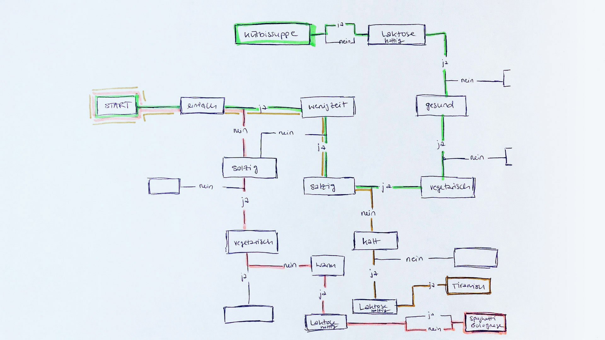
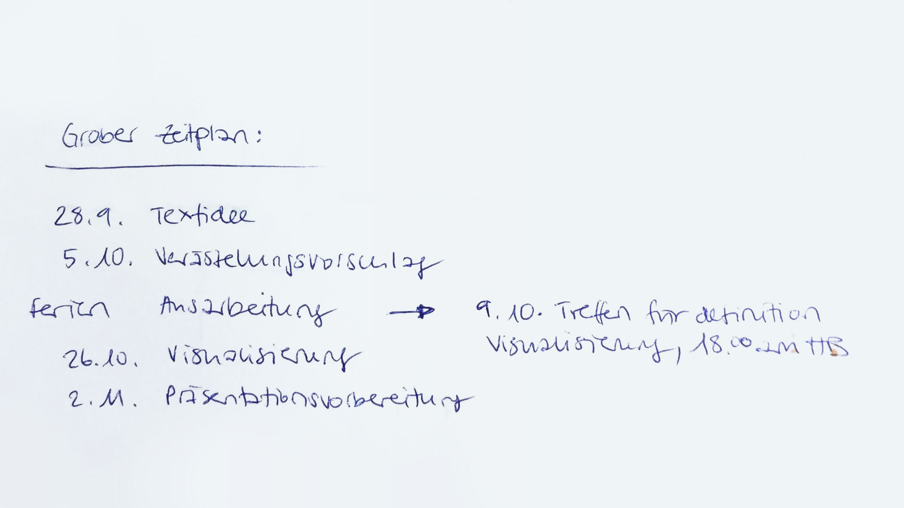

Planung
Arbeitsteilung
Jeder hatte nun individuell an einer möglichen Verästelung gearbeitet und getestet, was möglich ist, bzw. welche Umsetzung am meisten Sinn machen würde. Im heutigen Unterricht möchten wir diese Ideen zusammenfügen und uns für eine Vorgehensweise entscheiden. Bei unserem Austausch von Ideen wurde uns schnell klar, dass wir zwar ähnliche Ideen und Problematiken hatten, es uns aber schwer fällt, uns auf etwas zu einigen.

Folgende Problematiken standen im Raum:
- Die Verästelung wird sehr schnell zu einem riesigen Baum
- Solange die Rezepte nicht definiert sind, ist es schwierig Fragestellungen zu definieren
- Die Verästelung darf nicht zu viele Schritte haben, weil ein möglicher User dieses Produkts nicht 100 Fragen beantworten möchte, bis er zum Rezeptvorschlag kommt
- Was ist der erzählerische Faktor des Ganzen? Also wie verpacken wir die Idee in eine Erzählung?
Nach einem eher frustrierenden Zusammensitzen entschieden wir uns erst einmal für eine Kaffeepause, damit sich jeder nochmals individuell Gedanken dazu machen kann.
Neuer Ansatz
Erstaunlicherweise erwies sich diese Pause als genau das Richtige. Mit durchgelüftetem Kopf hatten wir plötzlich neue Ideen und konnten uns relativ schnell auf eine Vorgehensweise einigen.
Mit untenstehenden Eckpunkten möchten wir fürs Erste fortfahren:
- Aufteilung in 4 Jahreszeiten, jeder Person wird eine Jahreszeit zugeteilt
- Zu jeder Jahreszeit gibt es eine individuelle Geschichte
- Das Ziel jeder Geschichte ist es, am Schluss einen Rezeptvorschlag für einen Hauptgang zu generieren
- Jeder definiert 3 Rezepte passend zu seiner zugeteilten Jahreszeit
- Alle Geschichten beginnen auf dem Flohmarkt
- Es gibt 1 Hauptperson und das bist «du» als Leser der Geschichte
- Die Verästelung hat eine ja/nein Struktur
- Zwischen den einzelnen Verästelungen können einzelne Sätze als Überleitung zur nächsten Frage integriert werden
- Am Schluss der Verästelung wird ein kurzer abschliessender Text ergänzt
Zeitplan
Zusätzlich haben wir uns einen groben Zeitplan erstellt und definiert, was bis wann erledigt sein soll.
